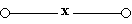

Алгебра логики
Булевы функции
Булева функция (логическая функция, или функция алгебры логики) от $n$ переменных — отображение $B^n \to B$, где $B = \{0,1\}$ — булево множество. http://ru.wikipedia.org/wiki/Булева_функция
Основные соотношения
- $\bar{\bar x}=x$ - отрицание отрицания поглощается.
- $x\land\bar x=0$ - x и не x не могут быть одновременно.
- $x \lor 1=1$;
- $x \lor x=x, x=x \lor x \lor x$;
- $x \lor 0=x$;
- $x \land x=x, x=x \land x \land x$;
- $x \land 0=0$;
- $x \land 1=x$;
- $x \lor \bar x=1$
Двойственные функции
Функции тождественны, если $f(x_1, x_2, \dots, x_n)=g(x_1, x_2, \dots, x_n)$ на всех наборах аргументов (таблицы истинности совпадают).
$f(\overline{x_1},\overline{x_2},\dots,\overline{x_n})=\overline{g(x_1,x_2,\dots,x_n)}$ => $g$ двойственна $f$ ($f$ и $g$ можно поменять местами, то есть функции $f$ и $g$ двойственны друг другу). Из простейших функций двойственны друг другу константы 0 и 1, а из законов де Моргана следует двойственность конъюнкции и дизъюнкции. Тождественная функция, как и функция отрицания, двойственна сама себе (самодвойственная функция).
Важно: Если в булевом тождестве заменить каждую функцию на двойственную ей, снова получится верное тождество. В приведённых выше формулах легко найти двойственные друг другу пары.
Нормальные и совершенные нормальные формы: КНФ, ДНФ, СДНФ, СКНФ
Конъюнкция = "И". Дизъюнкция = "ИЛИ".
Простая конъюнкция или конъюнкт = конъюнкция некоторого конечного набора переменных или их отрицаний, причём каждая переменная встречается не более одного раза.
Дизъюнктивная нормальная форма (ДНФ) = дизъюнкция простых конъюнкций. Пример: $a \overline{b} c\lor b c\lor\overline{a}$.
Совершенная ДНФ (СДНФ) относительно некоторого набора переменных = ДНФ, у которой в каждую конъюнкцию входят все переменные данного набора, причём в одном и том же порядке. Пример: $a \overline{b} c\lor a b c\lor\overline{a} b\overline{c}$.
СДНФ и СКНФ можно построить по таблице истинности.
Булева Алгебра (Алгебра Буля)
Формально: непустое множество $A$ с двумя бинарными операциями $\land$ (конъюнкция), $\lor$ (дизъюнкция), унарной операцией $\lnot$ (отрицание) и двумя выделенными элементами: 0 (или Ложь) и 1 (или Истина) такими, что для всех ''a'', ''b'' и ''c'' из множества $A$ верны следующие аксиомы:
Проблема разрешимости
Все формулы алгебры логики делятся на тождественно истинные (всегда 1), тождественно ложные (всегда 0) и выполнимые (иногда 0, иногда 1).
Проблема разрешимости: к какому классу (из вышеперечисленных) относится данная формула?
Для каждой формулы может быть составлена таблица истинности, которая и даст ответ на поставленный вопрос, но при большом количестве переменных практическое использование таблиц истинности затруднительно.
Нетабличный способ определения формулы к данному классу
Способ состоит в приведении формулы к нормальной форме (ДНФ или КНФ) и использовании правил, которые позволяют определить, какой является формула (тождественно истинной, тождественно ложной, выполнимой).
- Критерии тождественной истинности: необходимо и достаточно, чтобы любая дизъюнкция, входящая в КНФ, содержала переменную и её отрицание.
- Критерии тождественной ложности: необходимо и достаточно, чтобы любая конъюнкция, входящая в ДНФ, содержала переменную и её отрицание.
Замкнутые классы. Монотонные функции
Замкнутый класс - такое множество булевых функций, замыкание которого относительно операции суперпозиции совпадает с ним самим: $[P]=P$. Другими словами, любая функция, которую можно выразить формулой с использованием функций множества $P$, снова входит в это же множество.
В 1941 году Эмиль Пост представил полное описание системы замкнутых классов (решетку Поста).
Примеры замкнутых классов:
Множество $P_2$ всех возможных булевых функций замкнуто.
Особо важны для теории булевых функций следующие замкнутые классы, называемые предполными классами:
- Класс $T_0$ функций, сохраняющих 0: $T_0=\left\{f(x_1,\dots,x_n)|f(0,\dots,0)=0\right\}$.
- Класс $T_1$ сохраняющих 1: $T_1=\left\{f(x_1,\dots,x_n)|f(1,\dots,1)=1\right\}$.
- $S$ самодвойственных функций: $S=\left\{f(x_1,\dots,x_n)|f(\overline{x_1},\dots,\overline{x_n})=\overline{f(x_1,\dots,x_n)}\right\}$.
- $M$ монотонных функций: $M=\left\{f(x_1,\dots,x_n)|\forall i (a_i\le b_i) \to f(a_1,\dots,a_n)\le f(b_1,\dots,b_n)\right\}$.
- $L$ линейных функций: $L=\left\{f(x_1,\dots,x_n)|f(x_1,\dots,x_n)=a_0\oplus a_1x_1\oplus\dots\oplus a_nx_n,a_i\in\{0,1\}\right\}$.
Ни один из предполных классов не содержится целиком в объединении четырёх остальных; любой замкнутый класс булевых функций, отличный от $P_2$, целиком содержится хотя бы в одном из пяти предполных классов.
Другими важными замкнутыми классами являются:
- Класс конъюнкций K, являющийся замыканием множества $\{\land,0,1\}$. Он представляет собой множество функций вида $c_0\land(c_1\lor x_1)\land\ldots\land(c_n\lor x_n)$.
- Класс дизъюнкций D, являющийся замыканием множества $\{\lor,0,1\}$. Он представляет собой множество функций вида $c_0\lor(c_1\land x_1)\lor\ldots\lor(c_n\land x_n)$.
- Класс функций одной переменной U, содержащий только константы, отрицание и селектор (функцию, равную одному из своих аргументов на всех наборах их значений).
- Класс $O^m$ функций (m — любое натуральное, большее единицы число), удовлетворяющих следующему условию: для любых m наборов, на которых функция принимает нулевое значение, найдется переменная, также принимающая нулевое значение на всех этих наборах.
- Класс $O^\infty$ функций, для которых выполнено условие $f(x_1,\ldots,x_n)\ge x_i$, где $x_i$ — одна из переменных функции.
- Класс $I^m$ функций (m — любое натуральное, большее единицы число), удовлетворяющих следующему условию: для любых m наборов, на которых функция принимает единичное значение, найдется переменная, также принимающая единичное значение на всех этих наборах.
- Класс $I^\infty$ функций, для которых выполнено условие $f(x_1,\ldots,x_n)\le x_i$, где $x_i$ — одна из переменных функции.
В 1941 году Эмиль Пост показал, что любой замкнутый класс булевых функций является пересечением конечного числа описанных выше классов, приведя полное описание структуры замкнутых классов двузначной логики. Также Пост установил, что любой замкнутый класс может быть порожден конечным базисом.
Полные системы функций. Базисы + Пост - основная теорема о функциональной полноте
Множество функций $A$ - полная система, если замыкание $A$ совпадает с множеством всех булевых функций $[A]=P_2$ (т.е. любую логическую функцию можно выразить формулой с использованием только функций множества $A$).
Критерий Поста формулирует необходимое и достаточное условие полноты системы булевых функций:
Система булевых функций полна тогда и только тогда, когда она не содержится целиком ни в одном из классов $T_0$,
$T_1$, $S$, $M$, $L$.
В частности, если функция не входит ни в один из классов Поста, она сама по себе формирует полную систему. В
качестве
примера можно назвать штрих Шеффера (отрицание конъюнкции).
Широко известны такие полные системы булевых функций:
- $\left\{\land,\lor,\neg\right\}$ (конъюнкция, дизъюнкция, отрицание) - ДНФ.
- $\left\{\land,\oplus,1\right\}$ (конъюнкция, сложение по модулю 2, константа 1) - полином Жегалкина.
Полная система функций называется базисом, если она перестаёт быть полной при исключении из неё
любого элемента. Первая из упоминавшихся выше полных систем базисом не является, поскольку согласно законам де
Моргана
либо дизъюнкцию, либо конъюнкцию можно исключить из системы и восстановить с помощью остальных двух функций. Вторая
система является базисом — все три её элемента необходимы для полноты.
Максимально возможное число булевых функций в базисе — 4.
Иногда говорят о системе функций, полной в некотором замкнутом классе, и соответственно о базисе этого класса. Например, систему $\left\{\oplus,1\right\}$ можно назвать базисом класса линейных функций.
Алгебра Жегалкина
Полином Жегалкина - полином над $Z_2$ (коэффициенты только 0 и 1), в качестве произведения - конъюнкция, а в качестве сложения - исключающее или (xor, не равно, сложение по модулю 2). Общий вид:
$P = a \oplus \bigoplus_{ \begin{array}{c} 1\leq i_1< \ldots<i_k\leq n \\ k\in\overline{0,n} \end{array} }a_{i_1,\ldots,i_k}\land x_{i_1}\land\ldots \land x_{i_k}, \quad a, a_{i_1,\ldots,i_k}\in \{0,1\}.$
По теореме Жегалкина каждая булева функция единственным образом представляется в виде полинома Жегалкина.
| $x$ | $y$ | Const Ложь 0 | Конъюнкция $\land$ |
$x$ | $y$ | Исклю-чающее ИЛИ, XOR, | Дизъюнкция $\lor$ | Стрелка Пирса, ↓, ИЛИ-НЕ | Экви- валентность | $\overline{y}$ | Импликация $x \to y$ | $\overline{x}$ | Штрих Шеффера, И-НЕ | Const Истина 1 | |||
| 0 | 0 | 0 | 0 | 0 | 0 | 0 | 0 | 0 | 0 | 1 | 1 | 1 | 1 | 1 | 1 | 1 | 1 |
| 0 | 1 | 0 | 0 | 0 | 0 | 1 | 1 | 1 | 1 | 0 | 0 | 0 | 0 | 1 | 1 | 1 | 1 |
| 1 | 0 | 0 | 0 | 1 | 1 | 0 | 0 | 1 | 1 | 0 | 0 | 1 | 1 | 0 | 0 | 1 | 1 |
| 1 | 1 | 0 | 1 | 0 | 1 | 0 | 1 | 0 | 1 | 0 | 1 | 0 | 1 | 0 | 1 | 0 | 1 |
| И, ИЛИ, НЕ | 0 | $x \land y$ | $x \land \overline{y}$ | $x$ | $\overline{x} \land y$ | $y$ | $x \lor y$ | $\overline{x \lor y}$ | $\overline{y}$ | $\overline{x}$ | $\overline{x \land y}$ | 1 | |||||
| Жегалкина | 0 | $xy$ | $xy+x$ | $x$ | $xy+y$ | $y$ | $x+y$ | $xy+x+y$ | $xy+x+y+1$ | $y+1$ | $x+1$ | $xy+1$ | 1 | ||||
Переключательные схемы
Функции проводимости $F$ некоторых переключательных схем:
a)
Схема не содержит переключателей и проводит ток всегда, следовательно $F=1$;
- б)
- Схема содержит один постоянно разомкнутый контакт, следовательно $F=0$;
- в) 
- Схема проводит ток, когда переключатель х замкнут, и не проводит, когда х разомкнут, следовательно, $F(x) = x$;
- г) -
- Схема проводит ток, когда переключатель х разомкнут, и не проводит, когда $х$ замкнут, следовательно, $F(x) = \bar x$;
- д)
- Схема проводит ток, когда оба переключателя замкнуты, следовательно, $F(x) = x \land y$;
- е)
- Схема проводит ток, когда хотя бы один из переключателей замкнут, следовательно, $F(x)=x \lor y$;
- ж)
- Схема состоит из двух параллельных ветвей и описывается функцией .
Две схемы называются равносильными, если через одну из них проходит ток тогда и только тогда, когда он проходит через другую (при одном и том же входном сигнале).
Из двух равносильных схем более простой считается та схема, функция проводимости которой содержит меньшее число логических операций или переключателей.
Способы доказательства тавтологии и следствия
Тавтологией называется тождественно истинное высказывание, верное при любых значениях своих компонентов. Формула в исчислении высказываний является тавтологией или тождественно истинной, если её значение для любых значений аргументов истинно.
Примеры тавтологий:
- $ A \to A $ («Из ''A'' следует ''A''»)
- $(A) \lor (\lnot A)$ («''A'' или не-''A''»)
- $\overline{P \land \overline P}$.
- $(P \land (P \to Q)) \to Q$
- $A \to (B \to A)$
Формула F называется тавтологией, или тождественно истинной формулой, если F истинно при любой интерпретации.
Понятие тавтологии "двойственно"' понятию выполнимой формулы: $F$ – тавтология тогда и только тогда, когда $\lnot F$ не выполнима. Определение эквивалентных формул, данное выше, может быть переформулировано следующим образом: F эквивалентна G, если F є G – тавтология.
Формула является ''тождественно истинной'', если она истинна при любых значениях входящих в неё переменных. Вот несколько широко известных примеров тождественно истинных формул логики высказываний:
Законы де Моргана:
1) $ \neg (p \lor q) \leftrightarrow (\neg p \land \neg q)$;
2) $ \neg (p \land q) \leftrightarrow (\neg p \lor \neg q)$;
Закон контрапозиции:
$(p\to q)\leftrightarrow(\neg q\to \neg p)$;
'''Законы поглощения''':
1) $p\lor(p\land q)\leftrightarrow p$;
2) $p\land(p\lor q)\leftrightarrow p$;
'''Законы дистрибутивности''':
1) $p\land(q\lor r)\leftrightarrow(p\land q)\lor(p \land r)$;
2) $p\lor(q\land r)\leftrightarrow(p\lor q)\land(p \lor r)$.
Общие свойства символа тавтология
Правило введения и удаления логических знаков
Метод Резолюции. Теорема о замене. Теорема о резолюциях. Доказательство тавтологии с помощью метода резолюции
Правило резолюций – это правило вывода, восходящее к методу доказательства теорем через поиск противоречий; используется в логике высказываний и логике предикатов первого порядка. Правило резолюций, применяемое последовательно для списка резольвент, позволяет ответить на вопрос, существует ли в исходном множестве логических выражений противоречие
Пусть $C_1$ и $C_2$ - два предложения в исчислении высказываний, и пусть $C_1 = P \lor C'_1$, а $C_2 = \lnot P \lor C'_2$, где $P$ - пропозициональная переменная, а $C'_1$ и $C'_2$ - любые предложения (в частности, может быть, пустые или состоящие только из одного литерала). Правило вывода
называется правилом резолюции. Предложения C1 и C2 называются ''резольвируемыми'' (или ''родительскими''), предложение $C'_1 \lor C'_2$ - ''резольвентой'', а формулы $P$ и $\lnot P$ - ''контрарными'' литералами.
Алгоритм:
- Составляем список дизъюнктов.
- Находим среди них какую-либо пару, в которой один дизъюнкт содержит переменную, а другой - ее отрицание. На основе этих двух дизънктов получаем один новый, которы заносим в список. И начинаем поиск подходящей пары снова.
- Все это продолжается до тех пор, пока на некотором шаге в списке не окажется пара $a$ и $\lnot a$.
Исчисление высказываний
Составное высказывание
Сокращенные таблицы истинности
Выбираем значение переменной, подставляем в логическое выражение, упрощаем выражение, заполняем строки в таблице истинности. Повторяем этот шаг пока таблица истинности не будет заполнена.
Формальные теории (исчисление)
Формальная теория - результат строгой формализации теории, предполагающей полную абстракцию от смысла слов используемого языка, причем все условия, регулирующие употребление этих слов в теории, явно высказаны посредством аксиом и правил, позволяющих вывести одну фразу из других.
Формальная теория – это совокупность абстрактных объектов, не связанных с реальным миром, в котором представлены правила оперирования множеством символов в строго синтаксической трактовке без учета их смыслового содержания, т.е. семантики.
Формальная теория считается определенной, если:
- Задано конечное или счётное множество произвольных символов. Конечные последовательности символов называются выражениями теории.
- Имеется подмножество выражений, называемых формулами.
- Выделено подмножество формул, называемых аксиомами.
- Имеется конечное множество отношений между формулами, называемых правилами вывода.
Аксиоматичное построение исчисления высказываний, правило вывода (правило заключения)
Формальное определение:
- алфавит есть множество символов:
- $а, b, ..., а_1, b_1,...$ - (пропозициональные) переменные, значением которой может быть логическое высказывание;
- $\neg, \land, \lor, \to$ (отрицание, конъюнкция, дизъюнкция и импликация) - пропозициональные связк;
- (,) - скобки, служебные символы;
- формула определяется индуктивно следующим образом:
- Если $P$ — пропозициональная переменная, то $P$ — формула.
- Если $A$ — формула, то $\neg A$ — формула.
- Если $A$ и $B$ — формулы, то $A \to B$, $A \land B$ и $A \lor B$ — формулы.
- Других соглашений нет.
- Одним из возможных вариантов является следующая система аксиом:
- $A \to (B \to A)$;
- $((A \to (B \to C)) \to ((A \to B) \to (A \to C)))$;
- $A \land B \to A$;
- $A \land B \to B$;
- $A \to (B \to (A \land B))$;
- $A \to (A \lor B)$;
- $B \to (A \lor B)$;
- $(A \to C) \to ((B \to C) \to ((A \lor B) \to C))$;
- $\neg A \to (A \to B)$;
- $(A \to B) \to ((A \to \neg B)\to \neg A)$;
- $A\lor\neg A$.
вместе с единственным правилом вывода:
$\frac{A \to B, A}{B}$ (''Modus ponens'' - правило заключений) - если $A$ и $A \to B$ — выводимые формулы, то $B$ также выводима.
Сравнение результатов аксиоматической теории исчисления с результатами, относящимися к тавтологии
Предикаты. n-местный предикат. Кванторы
Предикат (''n''-местный, или ''n''-арный) — функция с множеством значений $\{ 0,1 \}$ (или «ложь» и «истина»), определённая на множестве $M={{M}_{1}}\times {{M}_{2}}\times \ldots \times {{M}_{n}}$. Таким образом, каждый набор элементов множества ''M'' он характеризует либо как «истинный», либо как «ложный».
Тождественно-истинный предикат: $P\left ( x_1, ..., x_n \right) \equiv 1$ (на любом наборе аргументов равен 1).
Тождественно-ложный предикат: $P\left ( x_1, ..., x_n \right) \equiv 0$ (на любом наборе аргументов равен 0).
Предикат выполнимый, если хотя бы на одном наборе аргументов он равен 1.
Квантор — общее название для логических операций, ограничивающих область истинности какого-либо предиката. Чаще всего используются:
- Квантор всеобщности $\forall$ - «для всех…», «для каждого…» или «каждый…», «любой…», «для любого…»).
- Квантор существования $\exists$, читается: «существует…» или «найдётся…».
В математической логике приписывание квантора к формуле называется связыванием или навешиванием квантора.
Связанные переменные
Переменная $v$ связана в формуле $F$, если $F$ содержит $Kv$, где $K$ — квантор.
Предикаты на конечных областях. Логика одноместных предикатов
Значений $x$ конечное число, их можно перебрать.
Конъюнкция - пересечение областей определения, дизъюнкция - объединение областей определения, отрицание - дополнение области определения.
Кванторы по предикатным переменным
Правило отрицания кванторов: применяется для построения отрицаний высказываний, содержащих кванторы, и имеет вид:
- $\lnot (\forall x)P(x) = (\exists x) \lnot P(x)$
- $\lnot (\exists x)P(x) = (\forall x) \lnot P(x)$
Аксиоматическое построение исчисления предикатов. Общезначимость и выполнимость функции. Проблема разрешимости.
Теорема Черча
Литература:
- Поздняков С.Н., Рыбин С.В., "Дискретная математика: учебник для вузов".